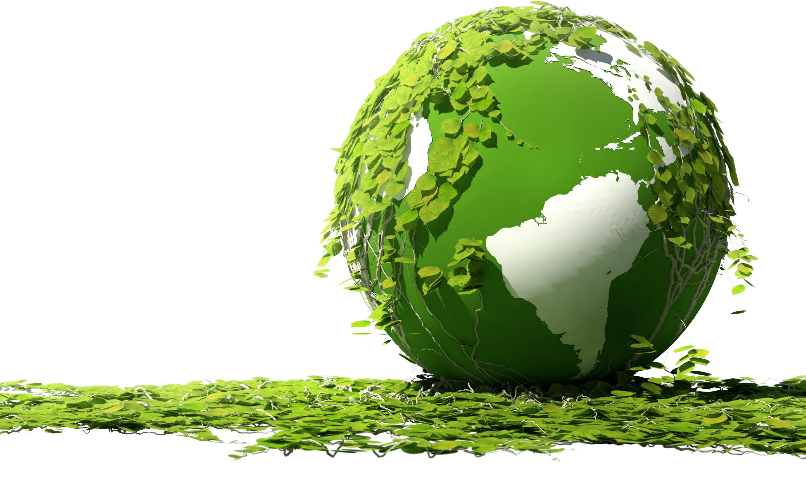
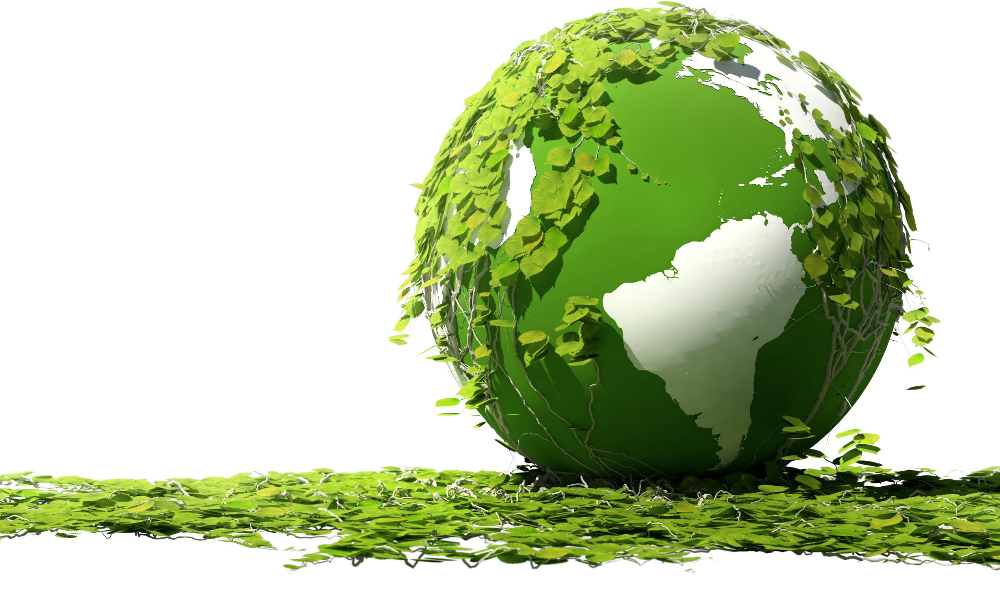

NASA scientist Jen Heldmann describes how the Earth’s moon was formed
The moon was formed ~4.5 billion years ago, about 30–50 million years after the origin of the Solar System,
out of debris thrown into orbit by a massive collision between a smaller proto-Earth and another planetoid,
about the size of Mars. Initially the Moon spun much faster, but because it is not perfectly spherical and bulges out slightly at its equator,
the orbit slowed down and eventually became tidally locked — keeping the same face toward the Earth.
Bulges along the Earth-Moon line caused a torque, slowing the Moon spin, much the same way a figure skater gradually opens to decelerate a spin.
When the Moon’s spin slowed enough to match its orbital rate, the bulge was in line with Earth, which is why we always see the same side of the Moon.
In our solar system, almost all moons spin at the same rate as they orbit.
The Earth would be a very different place if the moon did not exist. Not only did the Earth slow down the Moon’s rotation,
but the Moon is slowing down the rotation rate of the Earth. Since the moon’s formation, the Earth has been slowing its rotation due to the friction of the tides caused by the moon,
and in reaction to this exchange of energy, the moon has been moving farther away from the Earth. In fact, at the time of the moon’s formation the Earth rotated much faster than it does today;
a day on early Earth was only a few hours long. But the Moon, being small in relation to Earth, will take more than twice the age of the solar system to slow Earth’s spin rate to the Moon’s orbital rate.


 
